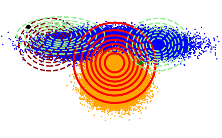

About
This is a machine learning blog whose intention is to go over the technical background of machine learning, with some practical examples, implementations, tutorials…

We want to give people the necessary tools to understand any field of machine learning, thus, avoiding the typical black-box/toy way of teaching Machine Learning you tipically find in many places. We do this just for fun, so we talk about what we think is important, what we like or what we find useful. We also use this to learn new things. We always try to give a reason further than intuitive. We do this to give you the necessary tools to understand complex works, and brind the gap between what you can find in toy courses and what you can find in the Bible of Pattern Recognition (Pattern Recognition from CM Bishop as example). We cover several topics, take a look at our index and about us for more information. If you want to collaborate, email us!!
Contributors
Juan Maroñas

I am PhD researcher from Pattern Recognition and Human Language Technology research group at Universidad Politecnica de Valencia. I created this blog with the help of Juan Sensio, who help me with web design. The main reason for creating this blog is providing a more grounded way of seeing things, which then can help you understand mostly anything in front of you. During my studies, my talks with people, my readings… I have realized that there is a big gap between what we learn (at least in Spain) and what we really need to be competitive. My intention is to help anyone bridge that gap so you can adquire the same tools I use, that I am still learning and that have make me experiment a big improve in my technical skills about statistics and everything related to machine learning. I am looking for collaborators so feel free to send me an email.
My fields of interests are generative modeling, semi supervised learning, data scarcity scenarios, bayesian statistics and adversarial examples. However, I focus my thesis mainly on bayesian statistics. As you will see in my posts most of my interests have lots in common. I also like CUDA programming. You can check my github to see my different projects. For example I have programmed a class wrapper over CUDA to learn CUDA. It is easy to follow, to use and to understand.
Joan Puigcerver

I am Software Engineer in Research at Google Brain Zurich, and a former PhD student at the Pattern Recognition and Human Language Technology research group.
Although I devoted my PhD to develop a probabilistic framework for keyword spotting applied applied on handwritten documents, I am broadly interested in Machine Learning and Pattern Recognition. These days, I am working with deep generative models and unsupervised learning.
During my PhD I wrote a few pieces of software which have become quite popular among handwritten text recognition researchers: Laia and PyLaia.
Lorenzo Quirós

TODO: Write a short description!